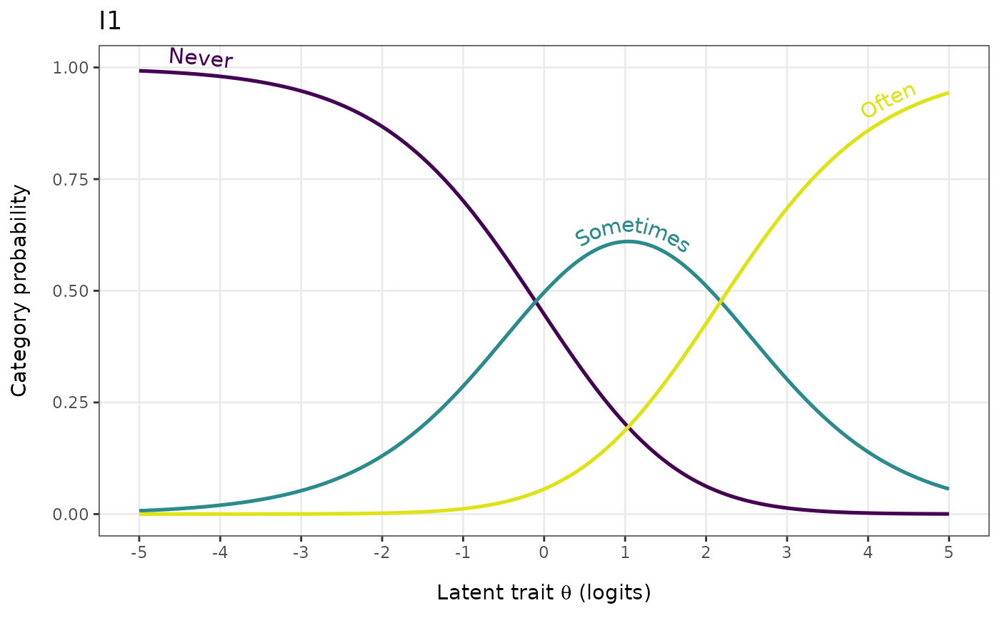

Plots model-implied response-category probability curves for each item
as a function of the latent trait \(\theta\). Polytomous items are
fitted with the Partial Credit Model via eRm::PCM(); dichotomous
items are fitted with the Rasch model via eRm::RM(). Each item gets
its own facet panel, with one curve per response category coloured
from low to high using the viridis palette. Comparable in scope to
eRm::plotICC() and mirt's trace plots, with a ggplot2 /
viridis output and optional descriptive labels for items and
categories.
Usage
RMitemCatProb(
data,
item_labels = NULL,
category_labels = NULL,
theta_range = NULL,
n_points = 200L,
viridis_option = "D",
viridis_end = 0.95,
facet_ncol = NULL,
label_wrap = 25L,
line_width = 0.9,
font = "sans",
output = c("ggplot", "dataframe"),
label_curves = c("legend", "path"),
item = NULL,
text_size = 4
)Arguments
- data
A data.frame or matrix of item responses. Items must be scored starting at 0 (non-negative integers). Missing values (
NA) are allowed — the model fit handles them.- item_labels
Optional character vector of descriptive item labels (facet strip titles). Must be the same length as
ncol(data). IfNULL(the default), column names are used.- category_labels
Optional character vector of labels for the response categories (legend). Must be the same length as the number of categories spanning from 0 to the maximum observed value. If
NULL(the default), numeric category values are used.- theta_range
Numeric length 2. Range of the latent trait \(\theta\) (logits) plotted along the x-axis. When
NULL(default) the range isc(-4, 4)forlabel_curves = "legend"and a widerc(-5, 5)forlabel_curves = "path"— the wider range givesgeomtextpathmore horizontal room to place per-curve labels at their peaks. Pass an explicitc(lo, hi)to override.- n_points
Integer. Number of evenly-spaced \(\theta\) values at which the curves are evaluated. Default
200L.- viridis_option
Character. Viridis palette identifier. One of
"A"through"H". Default"D"(viridis green).- viridis_end
Numeric in (0, 1]. Upper end of the viridis palette range; lower values keep the palette inside its mid-tones (avoids the very bright yellow at
1.0). Default0.95.- facet_ncol
Optional integer. Number of columns in the facet layout. Default
NULL(ggplot2::facet_wrap()auto-layout).- label_wrap
Integer. Characters per line for facet-strip label wrapping. Default
25L.- line_width
Numeric. Line width for the probability curves. Default
0.9.- font
Character. Font family for all text. Default
"sans".- output
Character. Either
"ggplot"(default) for aggplotobject, or"dataframe"for the underlying long-format probability table.- label_curves
Character. How response categories are identified.
"legend"(default) draws lines and a separate colour legend with one swatch per category — the standard multi-item presentation."path"usesgeomtextpath::geom_textpath()to write each category's label along its own curve (a la classic IRT trace plots) and suppresses the legend; valid for a single item at a time because narrow facets do not give path labels enough horizontal room to render legibly. The model is still fit on the full multi-itemdata(PCM thresholds require multi-item input for CML estimation); theitemargument then selects which item's curves to plot. Requires the optionalgeomtextpathpackage.- item
Character or integer. Used only when
label_curves = "path". Either an item name (matching a column indata) or a column index, identifying which item's category curves to plot. Required for path mode.- text_size
Numeric. Used only when
label_curves = "path". Size of the path labels in mm. Default4.
Value
If
output = "ggplot": a ggplot2::ggplot object, one facet per item.If
output = "dataframe": a long-format data.frame with columnsItem(factor in column order),Category(integer), andTheta,Probability(numeric), one row per item × category × theta gridpoint.
Details
For each polytomous item i with response categories
\(0, 1, \ldots, K_i\) and threshold parameters
\(\delta_{i,1}, \ldots, \delta_{i,K_i}\) from
eRm::thresholds(), the PCM category probability is
$$P(X_i = k \mid \theta) = \frac{\exp(\sum_{j=1}^{k} (\theta - \delta_{i,j}))}{\sum_{k'=0}^{K_i} \exp(\sum_{j=1}^{k'} (\theta - \delta_{i,j}))},$$
with the empty sum (when \(k = 0\)) taken as zero. For dichotomous items the function fits a Rasch model and treats the item difficulty \(\delta_i = -\beta_i\) as the single threshold, recovering the standard two-category logistic ICC.
The colour mapping uses scale_color_viridis_c() against the
integer category value, so the natural ordering of response
categories is preserved visually — low categories at one end of
the palette, high categories at the other. When category_labels
is provided, the legend uses those labels (e.g., "Never" /
"Sometimes" / "Often") while the colour mapping stays on the
integer category value.
Items with fewer response categories than the maximum (e.g., an otherwise four-category scale with one three-category item) contribute only the categories they actually have to their own facet — the y-axis still spans \([0, 1]\).
See also
RMitemICCPlot() for conditional ICCs binned by total
score, RMitemHierarchy() for item threshold locations on the
logit scale.
Examples
# \donttest{
if (requireNamespace("eRm", quietly = TRUE) &&
requireNamespace("ggplot2", quietly = TRUE)) {
data(pcmdat2, package = "eRm")
# Default plot
RMitemCatProb(pcmdat2)
# Custom item and category labels
RMitemCatProb(
pcmdat2,
item_labels = c("Mood", "Sleep", "Appetite", "Energy"),
category_labels = c("Never", "Sometimes", "Often")
)
# Underlying probability data
df <- RMitemCatProb(pcmdat2, output = "dataframe")
head(df)
# Single-item plot with labels written along each curve
# (classic IRT trace-plot style). Model is still fit on all four
# items; `item` picks which one to plot.
if (requireNamespace("geomtextpath", quietly = TRUE)) {
RMitemCatProb(
pcmdat2,
category_labels = c("Never", "Sometimes", "Often"),
label_curves = "path",
item = "I1"
)
}
}

# }